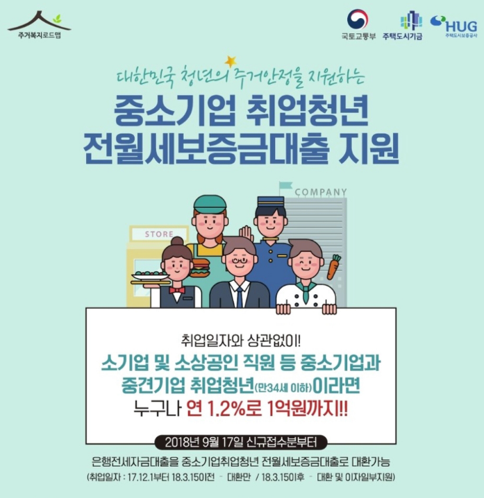

근로계약서를 작성 전, 계약서에 들어가야 할 내용을 미리 인지해야 합니다.
필수적으로 확인해야 할 임금 및 수당에 관한 내용들은 아래와 같습니다.
1. 근로계약기간
2. 임금(임금의 구성항목, 계산방법, 지급방법)
3. 소정근로시간(휴게시간, 근로일과 근로시간)
4. 휴일에 관한 상황
5. 연차 유급휴가에 관한 사항
근로계약서에 있어도 무효인 항목
근로기준법은 최저의 조건을 요구합니다.
따라서 근로기준법에 미달하는 내용을 포함한 근로계약서에 동의했더라도, 근로기준법의 기준으로 적용됩니다.
수습기간은 3개월 이내, 금액은 최저임금의 10% 감액할 수 있습니다.
만약 근로계약기간이 1년 미만인 경우에는 수습기간을 둘 수 없습니다.
따라서 근로계약을 맺을 때 반드시 구두가 아닌 서면으로 근로계약기간을 확인해야 합니다.
아르바이트, 알바생도 추가수당 있다!? - 가산임금이란?
근로계약서 상 *정해진 시간 이외(연장/야간/휴일근로)에
근무한 경우에 받는 추가임금!
시급 * 1.5배
알바 퇴직금 지급기준은 3가지에 충족한다면 누구나 퇴직금을 받을 수 있습니다.
1. 한 사업장에서 1년 이상 계속 근무한 자
2. 주 15시간 이상 근무한 자
3. 사업장 규모나 근로계약서 작성 여부, 4대 보험 가입 여부와 무관하게 지급받을 수 있습니다.
우선 알바 퇴직금 지급기준에서 1년 이상 계속 고용상태로 근무한 근로자라면 퇴직금을 받을 수 있습니다.
다만 여기저기 일터를 옮겨 다니며 짧게 일한 근로자는 포함되지 않습니다.
근로기준법은 주 40시간 근무하는 통상 근로자를 기준으로 합니다.
법적으로 주당 15시간 이상 근무하는 근로자가 1주일 동안 빠지지 않고 근무한 경우,
주 1회의 유급휴일을 부여해야 합니다.
또 주 4일 주 40시간 미만의 근로자라도 주당 15시간 이상 근무하면 주휴수당을 받는데
하루치에 해당하는 금액을 받을 수 있습니다.
그러나 15시간 이상만 일했다고 다 지금해야 하는건 아닙니다. 그러면 고용주들에게 너무 불리하겠지요.
때문에 3가지 조건을 모두 만족해야 합니다.
1. 매일 3시간 일주일 15시간 이상 근무할 것
2. 약속된 날짜에는 모두 출근하여 근무할 것
3. 주휴수당이 발생한 다음주에도 근무할 것
창업에 관련된 이벤트
취업 청년을 대상으로한 지원 이벤트